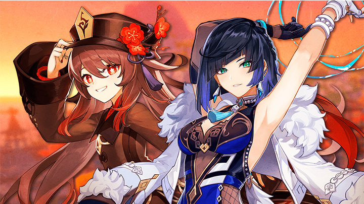
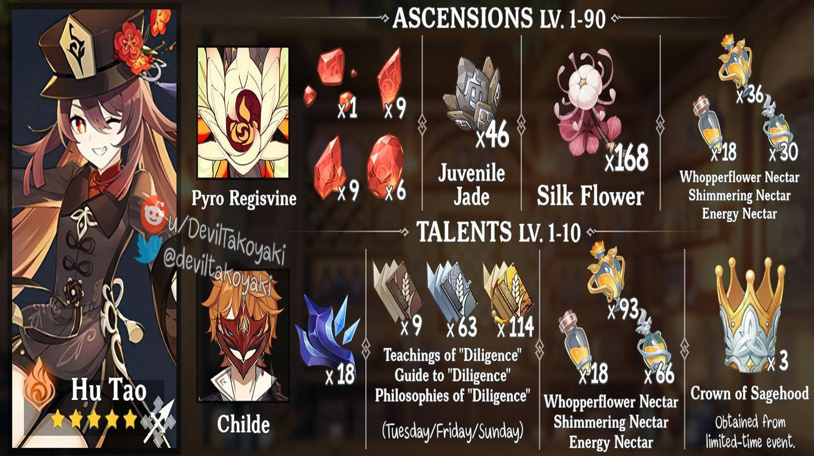
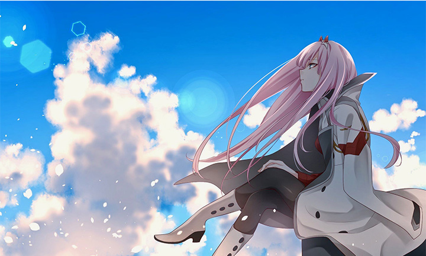

Essas são as duas personagens que supostamente vão estar no proximo baner de fotane.

Hutao e Ylena vieram jutas em um baner de Sumero. Foi um dos baner mais vendidos na versão 3.4 de genshi impect. E agora supostamente essas duas estarão de volta na nova nação que está para chegar, Afirma supostos liks. confira o link
Hutão

Yelan
Continiação de darling in the franxx?

Criador de Darling in the franxx anucia que está trabalhando em novo mangá de Continiação direta de sua obra mais conhecida.
Esta semana tivemos uma bomba no mundo dos mangás e animes, fans de darling the franxx vão a loucura. Criador da obra darling in the franxx anuncio que esta trabalhando em Continiação direta de uma das suas obras mais conhecida no mundo, fans estão a mais de 4 anos esperando por uma continiação e finalmente podem comemorar.
Mas inferlimente Atsuhiro Iwakami diz não poder dar mais detalhes sobre, o que deixa os fans mais empolgados com tudo isso.
Natsume Akatsuki confirma continiação da linght novel de konosuba.
A editora Kadokawa confirmou que a light novel Konosuba! ganhará uma sequência em 01 de Março de 2022 intitulada Kono Subarashii Sekai ni Shufukufu wo!: Fantastic Days.
Como o título sugere o objetivo é adaptar por escrito a história do game mobile Konosuba! Fantastic Days lançado em Fevereiro de 2020 para Android e IOS.
A obra original do autor Natsume Akatsuki foi publicada de 2013 a 2020 rendendo 17 volumes. Já a nova história trará texto de Hiru Kuma (autor de "Jidou Hanbaiki ni Umarekawatta") enquanto Kurone Mishima permanece responsável pelas ilustrações.
Konosuba! inspirou animes super populares em 2016 (11 episódios) e 2017 (11 episódios) além do filme "Kurenai Densetsu" em 2020 (1h30).
Uma sequência de formato indefinido foi anunciada em Julho de 2021 entretanto ainda não revelou detalhes nem previsão de estreia (twitter abaixo).
A série conta a história do personagem Kazuma. Jovem malandro, sem vergonha e oportunista que foi transportado para outro mundo juntando-se a Aqua, deusa de pouca inteligente e utilidade; Megumin, maga fanática por magias de explosão e Darkness, cavaleira masoquista Este quarteto de atrapalhados se encarregam de missões hilárias no intuito sofrido de pagar dívidas e ganhar o pão de cada dia.